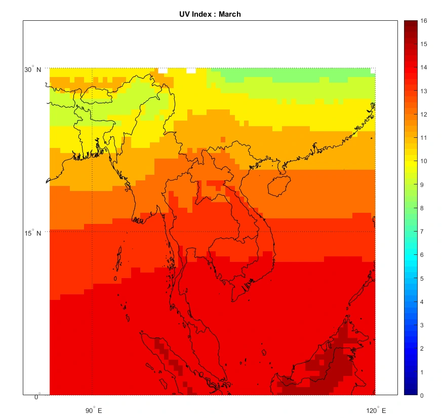
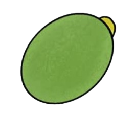

Despite a reported 88.8% municipal waste collection rate, Thailand generates an estimated 428 kilotons of mismanaged plastic waste annually due to collection gaps and unsanitary disposal facilities [1]. While rural areas produce 70.1% of the waste exposed to environmental wash-off, extreme urban density makes Bangkok a critical leakage point [1]. Within Thailand's high-priority river catchments, just 10 districts in and around Bangkok account for 51.7% of all exposed mismanaged plastic [1]. Massive volumes of this uncollected waste are dumped directly into waterways like the Chao Phraya River [1]. Once in the river system, 47.6% of this plastic inevitably flows into the ocean, resulting in an average marine discharge of 9.3 kilotons annually [1]. This figure surges to 14.3 kilotons during the rainy season, heavily contaminating vulnerable coastal ecosystems [1].
What if our greatest pollutant protected our most fragile ecosystem?
Waste management and marine conservation have historically existed in different realms. Coral bleaching is viewed as a chemical and climate problem, whereas plastic pollution is viewed as a failure of urban infrastructure.
These two crises are located in the same physical location in Thailand. Millions of plastic bottles end up in the Andaman Sea and the Gulf of Thailand each year after washing down municipal rivers. Millions of beachgoers lather on chemical sunscreens that directly drain into fragile coral systems along the same beaches.
MELANIFY connects these two problems directly.
Post-consumer plastic should not be disposed of like trash in a landfill. We see polyethylene terephthalate (PET) as an unexplored carbon mine with negative costs. We use synthetic biology to transform this enduring environmental burden into allomelanin, a highly effective, dark-pigmented, completely biodegradable UV barrier designed by nature to absorb intense sun radiation.
We do more than just recycle. We are biologically upcycling, transforming yesterday's plastic waste into tomorrow's reef-safe protector.
Three connected problems.
One opportunity.
Thailand endures severe year-round solar radiation, with the national UV index averaging 11 and 12 annually and surging to extreme levels between 13 and 14 (see Figure 1) across the country during the March hot season [2, 4]. Across major provinces like Bangkok and Phuket, a mere 15 to 20 minutes of midday exposure triggers acute sunburn [4]. The World Health Organization classifies this intense ultraviolet radiation as a direct carcinogen that damages cellular DNA, inflames skin, and weakens immunity [3]. Over time, chronic exposure leads to severe health conditions, including cataracts, premature skin aging, and life-threatening skin cancers [3]. Because global health guidelines mandate sun protection at a UV index of 3 or above [3], Thailand’s extreme solar radiation levels make daily broad-spectrum sunscreen application an essential health requirement for millions of outdoor workers and residents.

Commercial sunscreens rely heavily on synthetic UV filters like Benzophenone-3 (oxybenzone) that function as severe marine contaminants [6]. Once washed into coastal waters, oxybenzone becomes highly toxic to marine life, especially under direct sunlight [6]. At concentrations as low as 6.5 µg/L, it severely deforms coral larvae by damaging their DNA and forcing them to prematurely develop skeletons, which traps and kills the larvae [6]. This directly triggers widespread coral bleaching, which became so significant that in August 2021, Thailand legally banned sunscreens containing oxybenzone, octinoxate, 4-methylbenzylidene camphor, and butylparaben across all national parks [5]. This ban exposes a critical gap in technology: people still need daily protection from intense UV radiation, but the environment can no longer survive the chemical runoff required to provide it.
Neither mechanical recycling nor chemical sunscreens can provide a definite answer to repurposing plastic waste or protecting coral reefs. By converting post-consumer PET trash into a natural, reef-safe UV barrier, MELANIFY addresses both crises.
Meet Pichia pastoris
THE PROTEIN FACTORY
Pichia is built to pump out massive amounts of HotPETase, our engineered enzyme that chews up plastic outside the cell.
STABLE & ENGINEERED
We integrated our pathway directly into Pichia’s genome so it reliably expresses the plastic-degrading characteristics.

PLASTIC INTO FEEDSTOCK
HotPETase slices long plastic polymer chains down into soluble pieces (MHET) that the rest of our system can easily process.
BUILT TO SCALE
Pichia grows fast, stays tough, and thrives in standard bioreactors, making large-scale production feasible.
Pichia is just the first step. Dive in to see how our dual-host system converts plastic into reef-safe allomelanin!
EXPLORE OUR 5-STEP PATHWAY